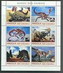
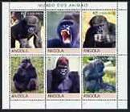
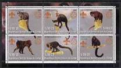
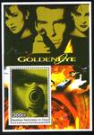
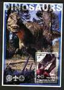
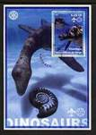
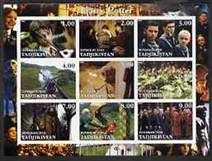

ILLEGAL STAMPS IN EXHIBITS AT THE NEW YORK 2016 WORLD STAMP SHOW
Francaise
ILLEGAL STAMPS IN EXHIBITS AT THE NEW YORK 2016 WORLD STAMP SHOW
By the Worldwide Philatelic Observatory
Update: PWO
The huge World Stamp Show (WSS) opened its doors in New York City on May 28, 2016 and closed them on June 4, 2016. Held under the direct patronage of the International Federation of Philately ( FIP), it included the display of 4,146 frames of the best competitive stamp exhibits from around the world. Tens of thousands of visitors were able to admire the multiple facets of the wonderful world of stamp collecting and spread worldwide their impressions related to this exceptional celebration of stamp collecting.
As is the case with any public and international event, it is necessary to take stock of both the positive and eventually any negative aspects in order to ensure that the next such event could be even more successful. Although the WSS is over, we still should take a closer look at what was exhibited and what we should remember about the exhibits. And then we should not oversee the fact that even such a world-class exhibition can reveal the darker sides of a generally bright and exciting picture of what philately and stamp collecting should represent. More precisely, illegal stamps were found included in a number of competitive stamp exhibits.
The undersigned attended the New York World Stamp Show (WSS) with the aim of promoting the work of the recently established Worldwide Philatelic Observatory (WPO). I was able to have many interesting exchanges about the current state of philately with officials in charge of the booths of various postal organisations, stamp dealers and stamp associations and societies.
Additionally, I thought it would be useful, at the same time, to examine some competitive stamp exhibits to see how the stamp collectors organised the themes they were displaying. It is while carrying out a random check of a number of such exhibits that I discovered several that contained individual illegal “stamps” and “souvenir sheets”. These discoveries were communicated to several officials involved with the organisation of the WSS, prior to the actually awarding of prizes, but to no avail. In the end, I discovered that several such exhibits containing illegal stamps had actually been awarded with a prize, and what was particularly worrying, is that several such exhibits were from the Youth category. However, the stamp collectors, owners of these exhibits, may not have known that several of the "stamps” and “souvenir sheets” that they included, were actually illegal stamps. For these reasons, the numbers of the frames as well as the name of the exhibitors will not be revealed.
Normally, any philatelic exhibition that includes the display of exhibits by stamp collectors competing for an eventual award should have a specific group of experts verifying the content of these exhibits to ensure that these do not contain any questionable material, such as illegal stamps. The presence of any one single illegal stamp will disqualify the stamp collector from participating in any competition for an eventual award. This verification is all the more necessary in view of the continued proliferation of illegal postage stamps that is affecting a growing number of countries around the world.
Consequently, it is difficult to understand why such a group of experts was not present at the 2016 New York WSS, or if it was present, how it missed identifying the presence of illegal stamps in a number of exhibits. All the more so, as the informed stamp collectors can remember, in 2014, the FIP, through its Fight against Fakes and Forgeries Commission, confirmed that illegal stamps are prohibited from being present and exhibited in all philatelic exhibitions under the patronage of the FIP (link).
In the circumstances, it is probably useful to recall the definition of illegal stamps. As defined in Wikipedia, illegal stamps are postage stamp-like labels issued in the names of existing independent countries or territories and that are used to defraud postal administrations, stamp collectors, and the general public. Already back in October 2000 at its second General Assembly, the WADP (World Association for the Development of Philately) defined illegal stamps as: Illegal issues for territories which are not entitled to issue stamps and false stamps produced by fraudsters in the name of an issuing authority with the intent to defraud collectors.
When an official stamp issuing authority discovers the existence of illegal stamps issued in its name or in the name of one of its territories, it normally reports this to the International Bureau of the Universal Postal Union (UPU) that publishes this information on its website, through what are known as UPU circulars. The list of philatelic circulars issued by the UPU between 1996 - 2016 can be found by anyone on these sites (link -> suddenly a password is required by the UPU - & link).
The present report is aimed, first of all, at those stamp collectors wishing to submit, at a philatelic exhibition, an exhibit for award-winning purposes, that they should re-examine the contents of their exhibit to make sure that it does not contain by chance any illegal stamps. The report is aimed also at the leaders of the national and international stamp collecting movements, like FIP and national philatelic organisations, who should raise the education level of their members and tutors, and also to enforce the compliance to their own rules. And last but not least, this report is also aimed at the WADP and the UPU that should finally take urgent measures, without any further delay, to curtail and put a definitive stop to the continuing spreading of illegal stamps and the infection by them of the worldwide stamp collecting, a fact that is clearly demonstrated by the present report.
For more information, please do not hesitate to contact:
Mrs. Maria Zofia Libera, Manager
Worldwide Philatelic Observatory
Tunisia
e-mail: phil.obs@progress-marketing.tn ; m.zofia.libera@gmail.comPWO - UPDATE - Nov. 6, 2017
We just learned about the FIP "Report of Expert Group", dated 31 May 2016.
It was compiled by the FIP experts Tay Peng Hian, Robert Odenweller, Chang Chien-Pien, Davld Petruzelli, and Tono Dwi Putranto, and it was signed by Mr. Tay Pieng Hian. We learn from the Report that:
"Members of Group also inspected as many exhihits as posible in each competitive class included the Youth Class C. Dubious items reported by judging teams were checked. ln addltions, all exhihits in the Champion Class were examined."
We can only wonder how five FIP experts could let so many illegal stamps escape their check and these stamps were even awarded. From the Worldwide Philatelic Observatory it was only one person who were present at the exhibition and who could identify so many illegal stamps, presented in her Report. PWO only explanation is that these FIP experts never heard of illegal stamp issues...
WPO REPORT FROM THE WORLD STAMP SHOW NY 2016
Two individual illegal stamps of Afghanistan that are part of the above series are included in a couple of winning exhibit frames.
The above illegal souvenir sheet is in a winning exhibit frame.
Reference: UPU Circular No. 345 of 21 August 2000


The illegal «stamp» of the dinosaur in the name of Angola included in a winning exhibit frame is the top left one of the illegal sheetlet reproduced above.
The top right illegal «stamp» and the top middle illegal stamp of the gorillas of the above sheetlet in the name of Angola are included in a couple of winning exhibit frames .
Reference: UPU Circular No. 406 of 25 September 2000

Two separate monkey illegal stamps in the name of the Democratic Republic of Congo for 2002 that are part of the six illegal stamps sheetlet (see to the left) are part of a winning exhibit frame.
The Democratic Republic of Congo has informed on UPU's WNS website that in 2002 only two recognized authentic stamps were issued (President J. Kabila). Link



The above illegal souvenir sheets " Democratic Republic of Congo" are included in several winning exhibit frames. They carry the years of 2005 (the bears), 2003 (Goldeneye) and 2002 (dinosaurs). The Democratic Republic of Congo has informed on UPU's WNS website that «No stamps issued» for the period from 2003 to including 2013. Link
The illegal «souvenir sheet» (see to the left) in the name of Apsny (Abkhazia), a territory of Georgia, is part of a winning exhibit frame.
UPU Circular No. 106 of 29 March 1999
Two illegal «stamps» of the 9-illegal stamp sheetlet (see to the left) in the name of Malawi for 2007, are part of a winning exhibit frame .
UPU Circular No. 59 of 2 March 2009.

The illegal stamp included in a winning exhibit frame is the top one on the left (showing Harry Potter with a wand pointed at him) of the 9 illegal stamp sheetlet.
Reference: UPU Circular No. 229 of 17 June 2002
Published: July 4, 2016. Last update: Dec. 14, 2019 .
This page is not copyrighted. Please specify the source when using its contents.
However some of quotations and images may be copyrighted by their owners. The legal notice applies to this page.